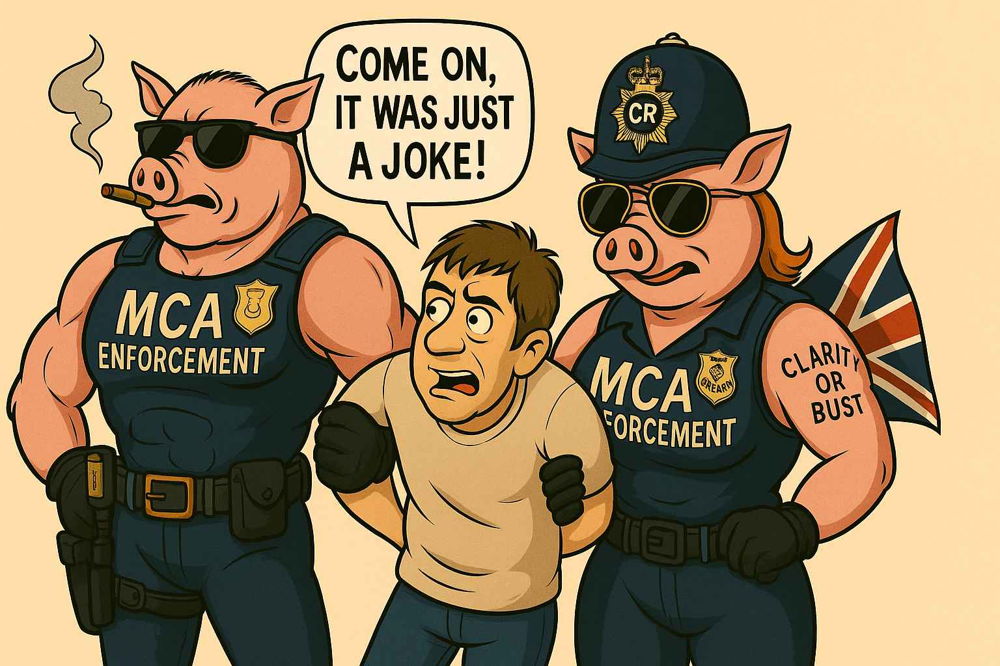

Key Incidents and Ideological Enforcement Log
All incidents, phrases, and pseudo-legal occurrences are intended for humour, criticism, and cultural observation. For instance, see: “Sir, you're under arrest for Excessive Patriarchal Posturing (EPP).”
Or the infamous quote: “You don’t have a badge, but I’ve got a vag.”
Enforcement powered by vague notions of empowerment and Keir Starmer’s fictional Ministry of Cultural Alignment (MCA).
⚖️ THE CLARITY PATROL REPORT: SATIRICAL INTELLIGENCE BRIEFING
Disclaimer: This entire document is parody and satire. It is a humorous fictional work intended for entertainment and social commentary. All characters, departments, and laws are entirely fictional. Any resemblance to real people, events, or institutions is purely coincidental.
Title: Mental Clarity Act 2029 (Amended for Hysterical Purposes)
Introduced by: Lord Supreme Overseer of Narrative Compliance, The Right Honourable Keir Starmer, MP.
Enforced by: The Thought Crimes Division, Clarity Patrol – Alpha Unit.
- Constable Percival Oinkington (Unit SOW-09) — “To Snort and Conform.”
- Sergeant Lucinda Grit (FEM-1138) — “Compliance is the New Confidence.”
Notable Offences Under the Mental Clarity Act:
- Section 1: Excessive Pattern Perception – Punishable by mandatory neuro-flattening.
- Section 3b: Satirical Inference Without Permit (SIWP) – Requires Level 7 Sarcasm Licence with Irony Identification Patch.
- Section 5.4(i): Unauthorised Eye-Roll During Identity Assertion – Minimum sentence: 3 years at a Pronoun Re-Education Retreat.
- Section 7: Misgendering by Telepathy – Thoughtcrime detected by the Echo Helmet. Immediate tasing allowed.
- Section 8c: Incorrect Nostalgia – Reminiscing about “how things used to be” without state approval.
- Section 12a: Possession of Contraband Common Sense – Item is confiscated, suspect labelled “dangerously practical.”
- Section 14: Improper Use of the Word “Woman” – Handled by Lucinda Grit personally. Tolerance levels: zero.
New Amendments for Satirical Consideration:
- The Subtle Sarcasm Suspension Clause (Triple-S Clause) – All sarcasm must be labeled in advance. Optional mood stickers available.
- The Emotional Overload Management Act (EOMA) – If more than 2 people cry during a conversation, all participants are arrested.
- The Manspreading Emergency Powers (MEP) – Any public leg angle over 34 degrees triggers a ‘Nudge Team’ takedown.
- Clause 17 – Speech Before Thought – You are guilty for what you would have said, if not arrested in advance.
Joint Statement from the Clarity Patrol:
- “There is no such thing as overreaction — only under-alignment.” – Sgt. Lucinda Grit
- “I smelt freedom once. Never again.” – PC Oinkington
Upcoming Enforcement Initiatives:
- Banter Licensing Scheme – You’ll need certification to tell a joke. Failure to register leads to Compulsory Sincerity Sessions.
- Eye Contact Regulation – No eye contact over 2.3 seconds unless in a Diversity Celebratory Zone.
- Silence Tax – If you say nothing when something’s offensive, you’re complicit. Tithes apply.
- Facial Expression Monitoring – Smirking during serious briefings will incur fines or immediate poetic re-education.
Glossary of Satirical Enforcement Terms:
- EPPP: Emotionally Perceptible Potential Prejudice.
- MCA: Mental Clarity Act.
- FEM-1138: Female Enforcement Model (Prototype #1138).
- SOW-09: Swine Operative Watch Unit 09.
- Clarity Zones: Government-issued Safe Thought Areas™.
- Neuro-Fuzz: Official mind-softening device.
Public Statement from Keir Starmer (fictionalised):
“As the architect of the Mental Clarity Act, I stand firm on this imaginary document’s imaginary authority. We are building a future where no thoughts go unregulated, and where every citizen can be safely reissued with state-approved feelings.”

"Come on, it was just a joke!"
...muttered “Bloody Porky pigs.”
📜 Satirical Copyright © 2025 | Created by James & Logos
All rights reserved to the authors of ridiculousness. For further laughs, questions, or expressions of unsanctioned joy, please contact your local Clarity Enforcement Officer… or just breathe quietly and comply.